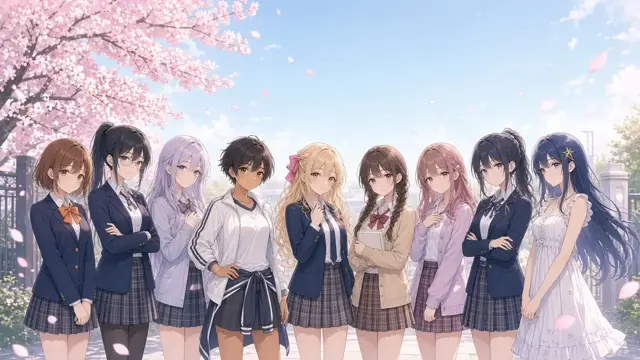
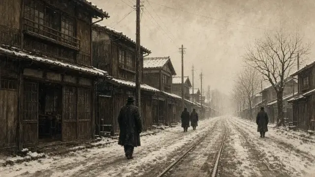
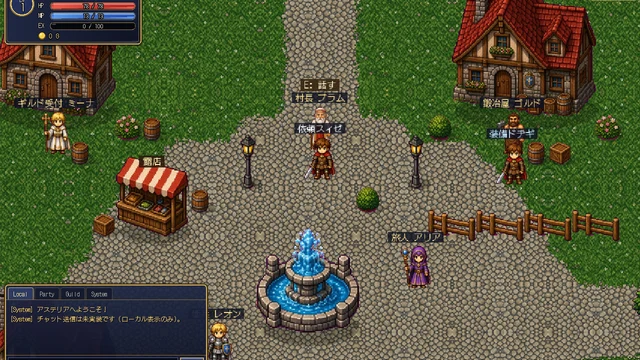
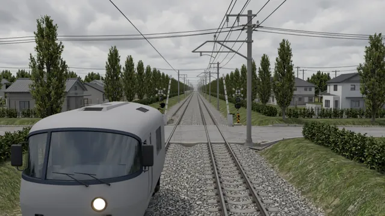
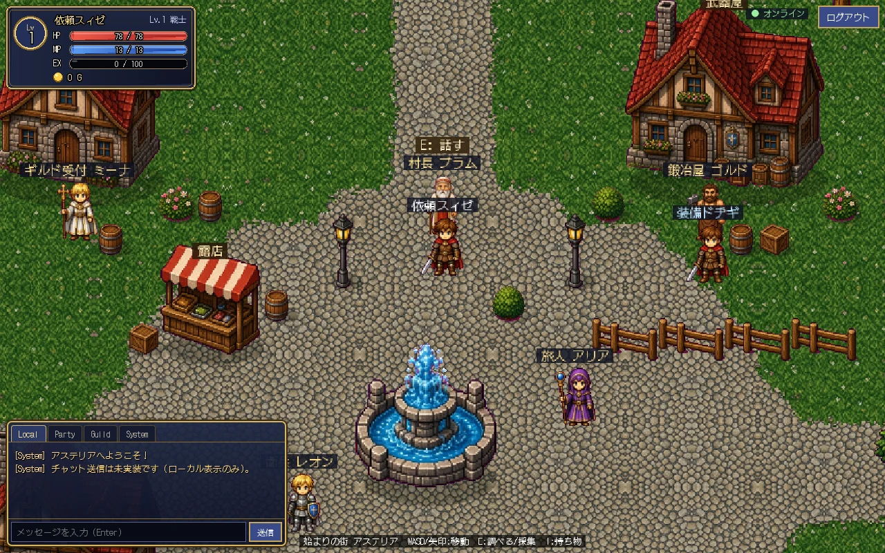
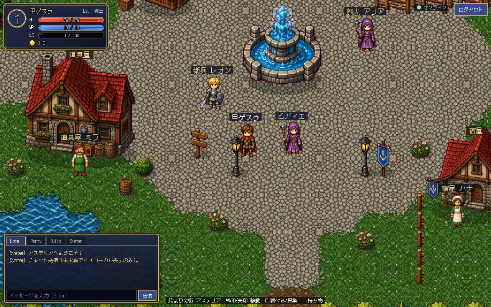
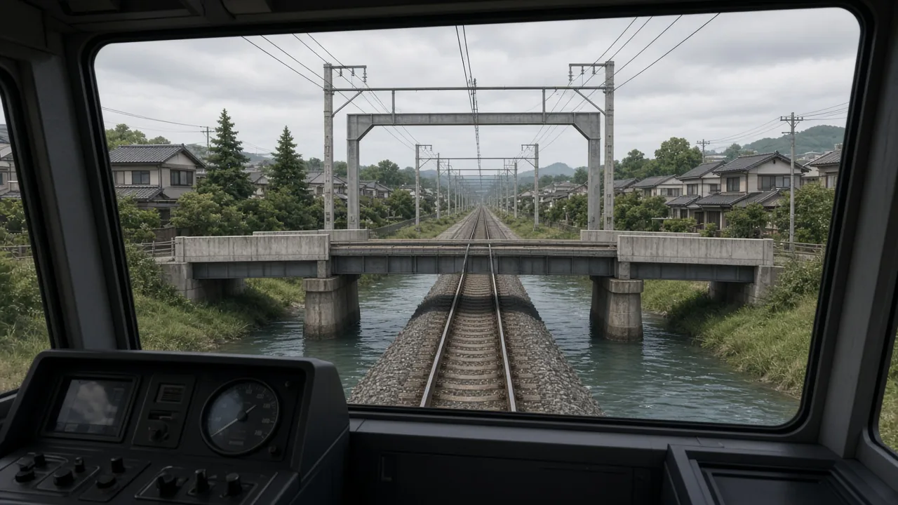
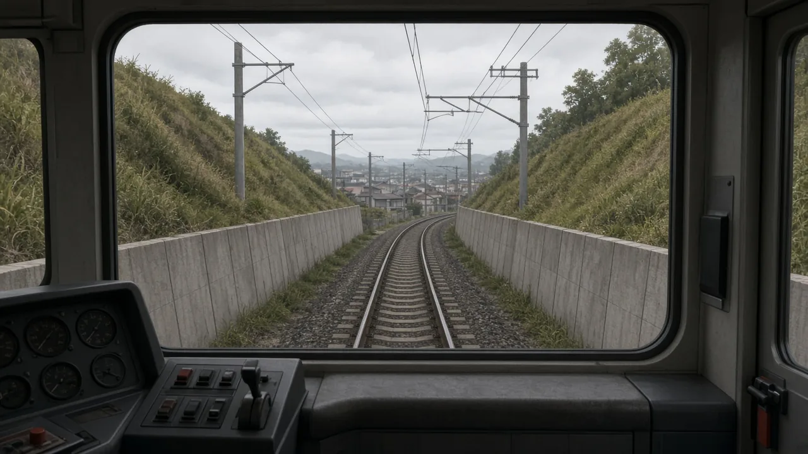

NEWSニュース
- お知らせ
新作のiPhone向け鉄道運転シミュレーター『RAILWAY MASTER』を開発中です。架空の日本の通勤鉄道網を、制御方式の違う3タイプの編成で運転します。
- アップデート
- アップデート
- アップデート
- アップデート
- アップデート
- アップデート
- アップデート
「青春クロニクル」v1.11.1〜1.11.3：今週の行動ログ、行動ボタン、部活・バイトの効果を数値つきで色分け（良い変化は緑、悪い変化は赤）し、週の変化をまとめて表示するようにしました。
- アップデート
- アップデート
- お知らせ
- アップデート
- アップデート
- お知らせ
GameBar を開設しました。3タイトルを公開しています。
- お知らせ
お問い合わせ窓口は準備中です。当面は GitHub Issues で受け付けます。
- サイト
サイトのデザインを全面的にリニューアルしました。
GAMESゲーム

恋愛学園シミュレーション青春クロニクル
～君と過ごした1000日間～
星見ヶ丘学園で過ごす高校3年間・152週。9人のヒロインとの出会い、デート、会話を、ボイスとイベントCGつきで描きます。無料・登録不要。
無料で遊ぶ
歴史ライフシミュレーション岐路の十年
TEN YEARS AT THE CROSSROADS 1936–1945
1936〜1945年の日本を、一人の人生として生きる。家族と恋愛を軸に、史実と改変を明示し出典つきで描きます。戦争を美化せず、被害を受けた人々の視点も併記しています。
戦争・死別の描写を含みます。
無料で遊ぶ- 防災教育ライフシミュレーション
ゆれのあと、きみへ。
ODAIBA AFTERLINES
お台場で首都直下地震（架空の想定）に遭遇する。避難、帰宅困難、安否確認、そして生活再建へ。判断をふりかえる防災知識図鑑つき。
架空のシナリオを含みます。実際の災害時は気象庁・自治体・消防・警察などの最新の公式情報に従ってください。本作の結果は実際の安全を保証しません。
無料で遊ぶ 
開発中オンラインMMORPGASTRAL CHRONICLES（仮）
開発中・仮称
大災厄のあとのエルディア大陸で、新人冒険者として仲間と冒険するクラシックなファンタジーMMO。
開発中の画面（ドット絵素材はAI生成）
公開日未定・詳細を見る
開発中鉄道運転シミュレーターRAILWAY MASTER
開発中
架空の日本の通勤鉄道網を、制御方式の違う3タイプの編成で運転します。
コンセプト画像（実ゲーム画面ではありません）
詳細を見る
公開中の各タイトルはブラウザで動作します。無料・会員登録不要です。画像は各ゲームの画面・ゲーム内画像、またはコンセプト画像です。開発中タイトルは公開されていません。
IN DEVELOPMENT開発中タイトル


ASTRAL CHRONICLES（仮）
ブラウザで遊べる2DオンラインMMORPG（斜め見下ろしのドット絵、コマンド選択式のターン制戦闘）
大災厄のあとのエルディア大陸で、新人冒険者として仲間と冒険するクラシックなファンタジーMMO。
開発中の内容（開発環境で実装済み）
- アカウント登録とキャラクター作成（戦士・騎士・魔法使い・僧侶）
- 始まりの街アステリアと草原
- ターン制戦闘とレベルアップ
- 装備・採集・製作・+10までの強化
- NPCショップ・宿屋・クエスト
- 同じ街で他のプレイヤーが見えるオンライン同期
今後の予定
- チャット・フレンド・パーティー
- パーティーで挑むダンジョンとボス
- ギルド
- プレイヤー市場
- 森林・鉱山などの追加エリア
現在は開発環境でのみ動作しており、一般公開はしていません。作品名は仮称です。内容は開発の過程で変わる可能性があります。


RAILWAY MASTER
iPhone向け鉄道運転シミュレーター
架空の日本の通勤鉄道網（本線・支線・車庫を含む約70km、32駅）を、VVVF・界磁チョッパ・抵抗制御の3タイプの編成で運転します。実在する鉄道会社・路線・車両の公式な再現や、許諾を受けた作品ではありません。
一般公開はしていません。内容は開発の過程で変わる可能性があります。実用の運転士訓練や安全教育用ではありません。
ABOUTGameBar について
GameBar は、仕事帰りにバーへ立ち寄るような気軽さで、落ち着いて遊べるゲームを届けるブランドです。ブラウザを開けばすぐに遊べ、料金も会員登録もありません。